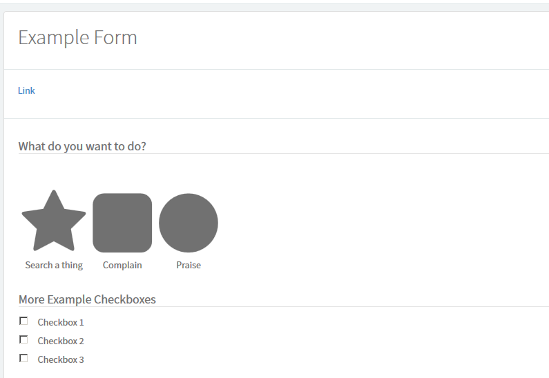
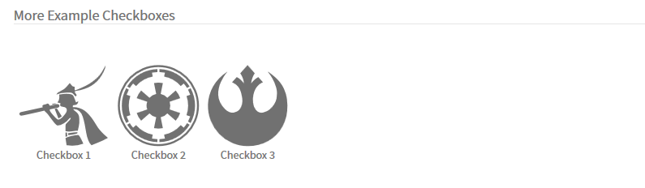

class: center, middle # Welcome Servicenow Developer meetup! --- # Service Portal custom variables Authors: Cody Esmay, Hunter Wolf <!--Original: https://goo.gl/hkkwEo--> Scoped app import from git: https://github.com/sndevs/snServiceCatalogWidget.git --- # What we will do - Set up a Service Portal Widget used on a macro variable - This variable will use the variable attribute field to work dynamically to set up custom looking checkboxs - Because this is not making new things it will still work with all other controls like client scripts and ui policies. --- # Getting started - Ensure you have a instance up and ready. - Open studio and import the scoped app from this url; https://github.com/sndevs/snServiceCatalogWidget.git --- # Navigating this apps' branches | Branch | Description | |------- | -------------------------------------------------------------------------------- | | Master | is the finished example | | 0.1 | is the starting point with the widget created and the such | | 0.4 | is the mid-way point with one set of checkboxes replaced with font-awesome icons | | 0.7 | is the finished example (same as Master) | --- # Setting up the widget: Server script - Open the "ButtonsWidg" widget - We will need to update all parts of this; - Look at this file [server.js](./0.4.server.js.html) - Then type it out on your own. Learn by doing. --- # Setting up the widget: Client script - Look at this file [client.js](./0.4.client.js.html) - Then type it out on your own. Learn by doing. --- # Setting up the widget: HTML Template - Look at this file [template.html](./0.4.template.html.html) - Then type it out on your own. Learn by doing. --- # Check in If you goto the "Example Form" and control-click the "link" in the description, you should see something like this;  --- # Setting up the variable attributes By default this field isn't listed on the form and their may be things hiding it, easiest way to get to it for the lab is to add it to a list. You'll notice once added to the list the first set of checkboxes have `button_widget=what_do_widget;icon=fa-icon` These details are parsed by the widget. The critical bits are that the "Grouping" is dictated by the "button_widget=value", and the icon is set by the "icon=fa-icon" bit. As soon as you update the first macro to use the "ButtonsWidg" widget, and recheck the form you'll have the first set of icons working. --- # Update the second set of variables So to get a feel for how dynamic this is, add the attributes to the second set of checkboxes something like; `button_widget=another_widget;icon=fa-icon` Where `another_widget` is the name of a newly created macro like `what_do_widget` And `fa-icon` are font-awesome icon 4.7.0 named things. Link to 4.7.0 Icons: https://fontawesome.com/v4.7.0/icons/ --- # Check in If you goto the "Example Form" and control-click the "link" in the description, you should see something like this; --- Feel free to request the item, you'll see that the checkboxs retain their valuse so you can use them like you had with regular checkboxes. 